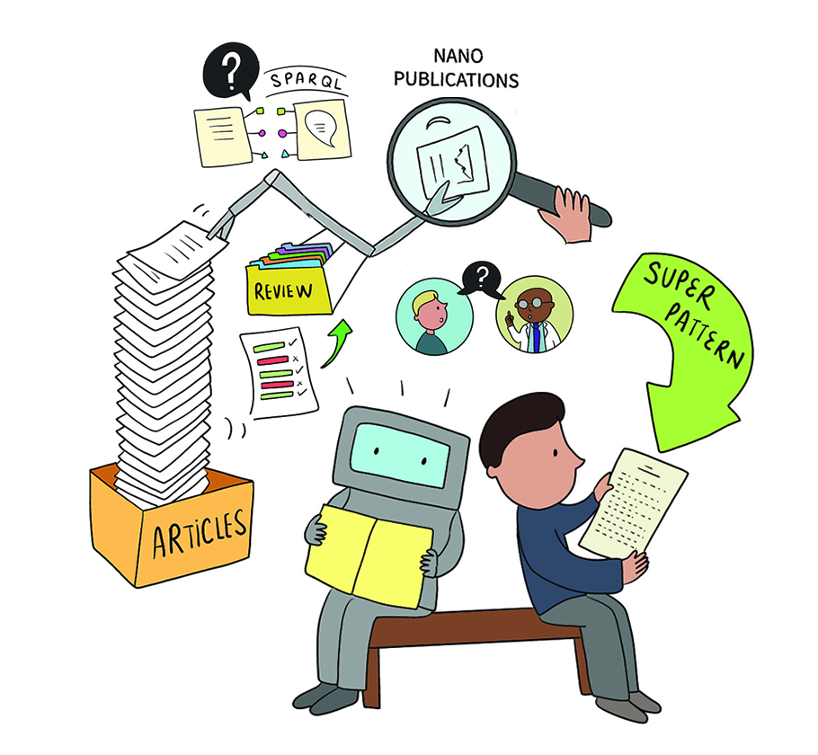

Linkflows: Towards Genuine SemanticPublishing in Science
Cristina-Iulia Bucur
Goal: Make scientific articles more machine-readable and interpretable
Scientific publishing: still using the "paper" paradigm
- How to make reviewing less ambiguous and imprecise?
- How to support in practice editorial process using a transparent and accurate review model?
- How to represent scientific claims in a machine-readable way?
- How to support in practice publishing of machine-readable claims?
Reviewing in the "paper" paradigm
Reviewing in the "paper" paradigm
How to make reviewing less ambiguous and imprecise?
Research Contribution 1: reviewing with semantic comments
- Evaluation:
- ground truth by original reviewers of the papers
- user study with reviewers and model experts
- Conclusions:
- model can be easily applied by model experts and peers
- model captures unambiguously the intentions of the reviewers
How to support in practice editorial process using a transparent and accurate review model?
How to support in practice editorial process using a transparent and accurate review model?
Evaluated editor interface

Research Contribution 2: interlinked publication elements schema
- Evaluation of the editor use case:
- compentency questions assessment
- user study with two interfaces supporting editors
- Conclusions:
- nanopublication-based model can answer all competency questions
- editor interfaces are important and useful
How to represent scientific claims in a machine-readable way?
How to represent scientific claims in a machine-readable way?
Formal representation of a scientific claim
| P( ∃z(o(z)∧i(z,x)∧r(y,z)) | s(y)∧c(x)∧i(y,x) ) ≥ 0.1 |
- x, y, z - class instances of c, s and o respectively
- c - "human", s - "STX1B mutation", o - "epilepsy"
- c - "human", x - class instances of c
- s - "STX1B mutation", y - class instances of s
- o - "epilepsy", z - class instances of o
- i - "is in the context of", maps instances of s and o to c
- r - "co-occurs with"
- P(...|...) - conditional probability function
- ≥ 0.1 - "frequently"
Machine-readable view of a scientific claim

Human-readable view of a scientific claim
In the context of all things of type human, things of type STX1B mutation frequently have a relation of type "co-occurs with" to things of type epilepsy that are in the same context (i.e. human).
Research Contribution 3: scientific claims with formal semantics
- Evaluation:
- formalization study with three stages
- Conclusions:
- scientific knowledge can be expressed with formal semantics from the start
- scientific claims from different fields can be formalized by different experts
How to support in practice publishing of machine-readable claims?
A genuine semantic publishing model
A genuine semantic publishing model
A genuine semantic publishing model
Machine-readable view
Human-readable view
Special issue with formalization papers
Research Contribution 4: field study with formalizations
- Evaluation:
- field study with "formalization papers"
- user feedback questionnaire
- Conclusions:
- the entire publication process can be represented in a machine-interpretable way
- scientific publication can be made more effective and efficient
Conclusions
- Models proposed can support the publishing practices
- Users are able to use the novel tools proposed with ease
- Scientific publishing can be brought closer to automated systems
- A new paradigm of scientific communication is possible
Linkflows: Towards Genuine SemanticPublishing in Science
Cristina-Iulia Bucur